Heatmap is a popular way to visualize data in matrix format. It is widely used in biology to visualize gene expression data in microarray and RNA-seq data. The heatmap is a matrix where rows represent the samples and columns represent the features. The color of each cell represents the value of the feature in the sample. The color can be continuous or discrete. The heatmap can be split by the columns or rows to show the subgroups in the data. The heatmap can also be annotated by the columns or rows to show the additional information of the samples or features.
Usage
Heatmap(
data,
values_by = NULL,
values_fill = NA,
in_form = c("auto", "matrix", "wide-columns", "wide-rows", "long"),
split_by = NULL,
split_by_sep = "_",
rows_by = NULL,
rows_by_sep = "_",
rows_split_by = NULL,
rows_split_by_sep = "_",
columns_by = NULL,
columns_by_sep = "_",
columns_split_by = NULL,
columns_split_by_sep = "_",
rows_data = NULL,
columns_data = NULL,
columns_name = NULL,
columns_split_name = NULL,
rows_name = NULL,
rows_split_name = NULL,
palette = "RdBu",
palcolor = NULL,
rows_palette = "Paired",
rows_palcolor = NULL,
rows_split_palette = "simspec",
rows_split_palcolor = NULL,
columns_palette = "Paired",
columns_palcolor = NULL,
columns_split_palette = "simspec",
columns_split_palcolor = NULL,
pie_size_name = "size",
pie_size = NULL,
pie_values = "length",
pie_name = NULL,
pie_group_by = NULL,
pie_group_by_sep = "_",
pie_palette = "Spectral",
pie_palcolor = NULL,
bars_sample = 100,
label = identity,
label_size = 10,
violin_fill = NULL,
boxplot_fill = NULL,
dot_size = 8,
dot_size_name = "size",
legend_items = NULL,
legend_discrete = FALSE,
legend.position = "right",
legend.direction = "vertical",
lower_quantile = 0,
upper_quantile = 0.99,
lower_cutoff = NULL,
upper_cutoff = NULL,
add_bg = FALSE,
bg_alpha = 0.5,
add_reticle = FALSE,
reticle_color = "grey",
column_name_annotation = TRUE,
column_name_legend = isFALSE(show_column_names) && !identical(legend.position, "none"),
row_name_annotation = TRUE,
row_name_legend = isFALSE(show_row_names) && !identical(legend.position, "none"),
cluster_columns = TRUE,
cluster_rows = TRUE,
show_row_names = !row_name_annotation,
show_column_names = !column_name_annotation,
border = TRUE,
title = NULL,
column_title = character(0),
row_title = character(0),
na_col = "grey85",
row_names_side = "right",
column_names_side = "bottom",
column_annotation = NULL,
column_annotation_side = "top",
column_annotation_palette = "Paired",
column_annotation_palcolor = NULL,
column_annotation_type = "auto",
column_annotation_params = list(),
column_annotation_agg = NULL,
row_annotation = NULL,
row_annotation_side = "left",
row_annotation_palette = "Paired",
row_annotation_palcolor = NULL,
row_annotation_type = "auto",
row_annotation_params = list(),
row_annotation_agg = NULL,
flip = FALSE,
alpha = 1,
seed = 8525,
layer_fun_callback = NULL,
cell_type = c("tile", "bars", "label", "dot", "violin", "boxplot", "pie"),
cell_agg = NULL,
combine = TRUE,
nrow = NULL,
ncol = NULL,
byrow = TRUE,
axes = NULL,
axis_titles = axes,
guides = NULL,
design = NULL,
...
)Arguments
- data
A data frame or matrix containing the data to be plotted. Based on the
in_form, the data can have the following formats:matrix: A matrix with rows and columns directly representing the heatmap.long: A data frame in long format with columns for values, rows, and columns.wide-rows: A data frame in wide format with columns for heatmap rows and values, and a single column for heatmap columns.wide-columns: A data frame in wide format with columns for heatmap columns and values, and a single column for heatmap rows.auto: Automatically inferred from the data format. Whendatais a matrix,in_formis set to"matrix". Whencolumns_byhas more than one column,in_formis set to"wide-columns". Whenrows_byhas more than one column,in_formis set to"wide-rows". Otherwise, it is set to"long".
- values_by
A character of column name in
datathat contains the values to be plotted. This is required whenin_formis"long". For other formats, the values are pivoted into a column named byvalues_by.- values_fill
A value to fill in the missing values in the heatmap. When there is missing value in the data, the cluster_rows and cluster_columns will fail.
- in_form
The format of the data. Can be one of
"matrix","long","wide-rows","wide-columns", or"auto". Defaults to"auto".- split_by
A character of column name in
datathat contains the split information to split into multiple heatmaps. This is used to create a list of heatmaps, one for each level of the split. Defaults toNULL, meaning no split.- split_by_sep
A character string to concat multiple columns in
split_by.- rows_by
A vector of column names in
datathat contains the row information. This is used to create the rows of the heatmap. Whenin_formis"long"or"wide-columns", this is requied, and multiple columns can be specified, which will be concatenated byrows_by_sepinto a single column.- rows_by_sep
A character string to concat multiple columns in
rows_by.- rows_split_by
A character of column name in
datathat contains the split information for rows.- rows_split_by_sep
A character string to concat multiple columns in
rows_split_by.- columns_by
A vector of column names in
datathat contains the column information. This is used to create the columns of the heatmap. Whenin_formis"long"or"wide-rows", this is required, and multiple columns can be specified, which will be concatenated bycolumns_by_sepinto a single column.- columns_by_sep
A character string to concat multiple columns in
columns_by.- columns_split_by
A character of column name in
datathat contains the split information for columns.- columns_split_by_sep
A character string to concat multiple columns in
columns_split_by.- rows_data
A data frame containing additional data for rows, which can be used to add annotations to the heatmap. It will be joined to the main data by
rows_byandsplit_byifsplit_byexists inrows_data. This is useful for adding additional information to the rows of the heatmap.- columns_data
A data frame containing additional data for columns, which can be used to add annotations to the heatmap. It will be joined to the main data by
columns_byandsplit_byifsplit_byexists incolumns_data. This is useful for adding additional information to the columns of the heatmap.- columns_name
A character string to rename the column created by
columns_by, which will be reflected in the name of the annotation or legend.- columns_split_name
A character string to rename the column created by
columns_split_by, which will be reflected in the name of the annotation or legend.- rows_name
A character string to rename the column created by
rows_by, which will be reflected in the name of the annotation or legend.- rows_split_name
A character string to rename the column created by
rows_split_by, which will be reflected in the name of the annotation or legend.- palette
A character string specifying the palette of the heatmap cells.
- palcolor
A character vector of colors to override the palette of the heatmap cells.
- rows_palette
A character string specifying the palette of the row group annotation. The default is "Paired".
- rows_palcolor
A character vector of colors to override the palette of the row group annotation.
- rows_split_palette
A character string specifying the palette of the row split annotation. The default is "simspec".
- rows_split_palcolor
A character vector of colors to override the palette of the row split annotation.
- columns_palette
A character string specifying the palette of the column group annotation. The default is "Paired".
- columns_palcolor
A character vector of colors to override the palette of the column group annotation.
- columns_split_palette
A character string specifying the palette of the column split annotation. The default is "simspec".
- columns_split_palcolor
A character vector of colors to override the palette of the column split annotation.
- pie_size_name
A character string specifying the name of the legend for the pie size.
- pie_size
A numeric value or a function specifying the size of the pie chart. If it is a function, the function should take
countas the argument and return the size.- pie_values
A function or character that can be converted to a function by
match.arg()to calculate the values for the pie chart. Default is "length". The function should take a vector of values as the argument and return a single value, for each group inpie_group_by.- pie_name
A character string to rename the column created by
pie_group_by, which will be reflected in the name of the annotation or legend.- pie_group_by
A character of column name in
datathat contains the group information for pie charts. This is used to create pie charts in the heatmap whencell_typeis"pie".- pie_group_by_sep
A character string to concat multiple columns in
pie_group_by.- pie_palette
A character string specifying the palette of the pie chart.
- pie_palcolor
A character vector of colors to override the palette of the pie chart.
- bars_sample
An integer specifying the number of samples to draw the bars.
- label
A function to calculate the labels for the heatmap cells. It takes the aggregated values as the argument and returns the labels to be shown in the heatmap. No labels will be shown for the NA the returned values.
- label_size
A numeric value specifying the size of the labels when
cell_type = "label".- violin_fill
A character vector of colors to override the fill color of the violin plot. If NULL, the fill color will be the same as the annotion.
- boxplot_fill
A character vector of colors to override the fill color of the boxplot. If NULL, the fill color will be the same as the annotion.
- dot_size
A numeric value specifying the size of the dot or a function to calculate the size from the values in the cell.
- dot_size_name
A character string specifying the name of the legend for the dot size.
- legend_items
A numeric vector with names to specifiy the items in the main legend. The names will be working as the labels of the legend items.
- legend_discrete
A logical value indicating whether the main legend is discrete.
- legend.position
A character string specifying the position of the legend. if
waiver(), for single groups, the legend will be "none", otherwise "right".- legend.direction
A character string specifying the direction of the legend.
- lower_quantile, upper_quantile, lower_cutoff, upper_cutoff
Vector of minimum and maximum cutoff values or quantile values for each feature. It's applied to aggregated values when aggregated values are used (e.g. plot_type tile, label, etc). It's applied to raw values when raw values are used (e.g. plot_type bars, etc).
- add_bg
A logical value indicating whether to add a background to the heatmap. Does not work with
cell_type = "bars"orcell_type = "tile".- bg_alpha
A numeric value between 0 and 1 specifying the transparency of the background.
- add_reticle
A logical value indicating whether to add a reticle to the heatmap.
- reticle_color
A character string specifying the color of the reticle.
- column_name_annotation
A logical value indicating whether to add the column annotation for the column names. which is a simple annotaion indicating the column names.
- column_name_legend
A logical value indicating whether to show the legend of the column name annotation.
- row_name_annotation
A logical value indicating whether to add the row annotation for the row names. which is a simple annotaion indicating the row names.
- row_name_legend
A logical value indicating whether to show the legend of the row name annotation.
- cluster_columns
A logical value indicating whether to cluster the columns. If TRUE and columns_split_by is provided, the clustering will only be applied to the columns within the same split.
- cluster_rows
A logical value indicating whether to cluster the rows. If TRUE and rows_split_by is provided, the clustering will only be applied to the rows within the same split.
- show_row_names
A logical value indicating whether to show the row names. If TRUE, the legend of the row group annotation will be hidden.
- show_column_names
A logical value indicating whether to show the column names. If TRUE, the legend of the column group annotation will be hidden.
- border
A logical value indicating whether to draw the border of the heatmap. If TRUE, the borders of the slices will be also drawn.
- title
The global (column) title of the heatmap
- column_title
A character string/vector of the column name(s) to use as the title of the column group annotation.
- row_title
A character string/vector of the column name(s) to use as the title of the row group annotation.
- na_col
A character string specifying the color for missing values. The default is "grey85".
- row_names_side
A character string specifying the side of the row names. The default is "right".
- column_names_side
A character string specifying the side of the column names. The default is "bottom".
- column_annotation
A character string/vector of the column name(s) to use as the column annotation. Or a list with the keys as the names of the annotation and the values as the column names.
- column_annotation_side
A character string specifying the side of the column annotation. Could be a list with the keys as the names of the annotation and the values as the sides.
- column_annotation_palette
A character string specifying the palette of the column annotation. The default is "Paired". Could be a list with the keys as the names of the annotation and the values as the palettes.
- column_annotation_palcolor
A character vector of colors to override the palette of the column annotation. Could be a list with the keys as the names of the annotation and the values as the palcolors.
- column_annotation_type
A character string specifying the type of the column annotation. The default is "auto". Other options are "simple", "pie", "ring", "bar", "violin", "boxplot", "density". Could be a list with the keys as the names of the annotation and the values as the types. If the type is "auto", the type will be determined by the type and number of the column data.
- column_annotation_params
A list of parameters passed to the annotation function. Could be a list with the keys as the names of the annotation and the values as the parameters.
- column_annotation_agg
A function to aggregate the values in the column annotation.
- row_annotation
A character string/vector of the column name(s) to use as the row annotation. Or a list with the keys as the names of the annotation and the values as the column names.
- row_annotation_side
A character string specifying the side of the row annotation. Could be a list with the keys as the names of the annotation and the values as the sides.
- row_annotation_palette
A character string specifying the palette of the row annotation. The default is "Paired". Could be a list with the keys as the names of the annotation and the values as the palettes.
- row_annotation_palcolor
A character vector of colors to override the palette of the row annotation. Could be a list with the keys as the names of the annotation and the values as the palcolors.
- row_annotation_type
A character string specifying the type of the row annotation. The default is "auto". Other options are "simple", "pie", "ring", "bar", "violin", "boxplot", "density". Could be a list with the keys as the names of the annotation and the values as the types. If the type is "auto", the type will be determined by the type and number of the row data.
- row_annotation_params
A list of parameters passed to the annotation function. Could be a list with the keys as the names of the annotation and the values as the parameters.
- row_annotation_agg
A function to aggregate the values in the row annotation.
- flip
A logical value indicating whether to flip the heatmap.
- alpha
A numeric value between 0 and 1 specifying the transparency of the heatmap cells.
- seed
The random seed to use. Default is 8525.
- layer_fun_callback
A function to add additional layers to the heatmap. The function should have the following arguments:
j,i,x,y,w,h,fill,srandsc. Please also refer to thelayer_funargument inComplexHeatmap::Heatmap.- cell_type
A character string specifying the type of the heatmap cells. The default is values. Other options are "bars", "label", "dot", "violin", "boxplot". Note that for pie chart, the values under columns specified by
rowswill not be used directly. Instead, the values will just be counted in differentpie_group_bygroups.NAvalues will not be counted.- cell_agg
A function to aggregate the values in the cell, for the cell type "tile" and "label". The default is
mean.- combine
Whether to combine the plots into one when facet is FALSE. Default is TRUE.
- nrow
A numeric value specifying the number of rows in the facet.
- ncol
A numeric value specifying the number of columns in the facet.
- byrow
A logical value indicating whether to fill the plots by row.
- axes
A string specifying how axes should be treated. Passed to
patchwork::wrap_plots(). Only relevant whensplit_byis used andcombineis TRUE. Options are:'keep' will retain all axes in individual plots.
'collect' will remove duplicated axes when placed in the same run of rows or columns of the layout.
'collect_x' and 'collect_y' will remove duplicated x-axes in the columns or duplicated y-axes in the rows respectively.
- axis_titles
A string specifying how axis titltes should be treated. Passed to
patchwork::wrap_plots(). Only relevant whensplit_byis used andcombineis TRUE. Options are:'keep' will retain all axis titles in individual plots.
'collect' will remove duplicated titles in one direction and merge titles in the opposite direction.
'collect_x' and 'collect_y' control this for x-axis titles and y-axis titles respectively.
- guides
A string specifying how guides should be treated in the layout. Passed to
patchwork::wrap_plots(). Only relevant whensplit_byis used andcombineis TRUE. Options are:'collect' will collect guides below to the given nesting level, removing duplicates.
'keep' will stop collection at this level and let guides be placed alongside their plot.
'auto' will allow guides to be collected if a upper level tries, but place them alongside the plot if not.
- design
Specification of the location of areas in the layout, passed to
patchwork::wrap_plots(). Only relevant whensplit_byis used andcombineis TRUE. When specified,nrow,ncol, andbyroware ignored. Seepatchwork::wrap_plots()for more details.- ...
Other arguments passed to
ComplexHeatmap::Heatmap()Whenrow_names_max_widthis passed, a unit is expected. But you can also pass a numeric values, with a default unit "inches", or a string like "5inches" to specify the number and unit directly.
Examples
# \donttest{
set.seed(8525)
matrix_data <- matrix(rnorm(60), nrow = 6, ncol = 10)
rownames(matrix_data) <- paste0("R", 1:6)
colnames(matrix_data) <- paste0("C", 1:10)
if (requireNamespace("cluster", quietly = TRUE)) {
Heatmap(matrix_data)
}
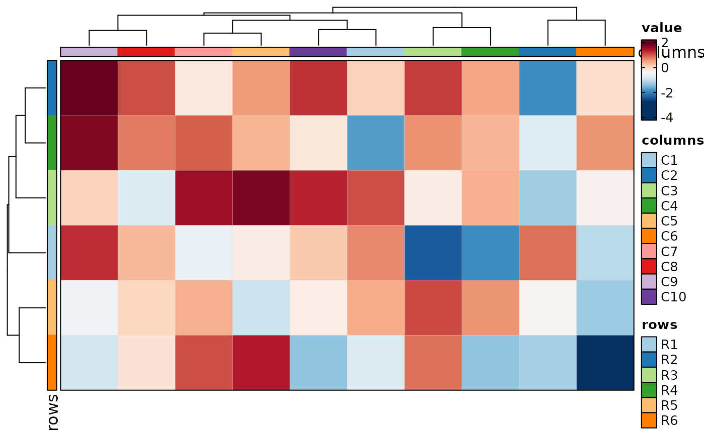
if (requireNamespace("cluster", quietly = TRUE)) {
# use a different color palette
# change the main legend title
# show row names (legend will be hidden)
# show column names
# change the row name annotation name and side
# change the column name annotation name
Heatmap(matrix_data, palette = "viridis", values_by = "z-score",
show_row_names = TRUE, show_column_names = TRUE,
rows_name = "Features", row_names_side = "left",
columns_name = "Samples")
}
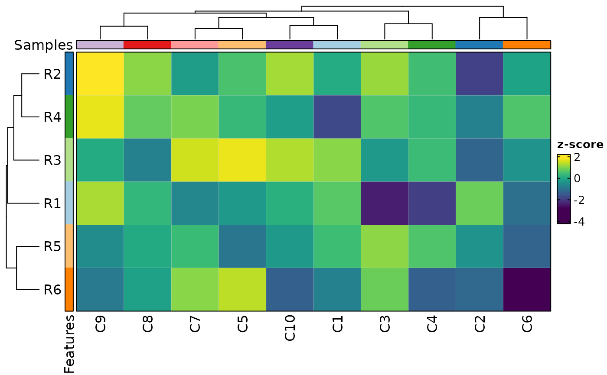
if (requireNamespace("cluster", quietly = TRUE)) {
# flip the heatmap
Heatmap(matrix_data, palette = "viridis", values_by = "z-score",
show_row_names = TRUE, show_column_names = TRUE,
rows_name = "Features", row_names_side = "left",
columns_name = "Samples", flip = TRUE)
}
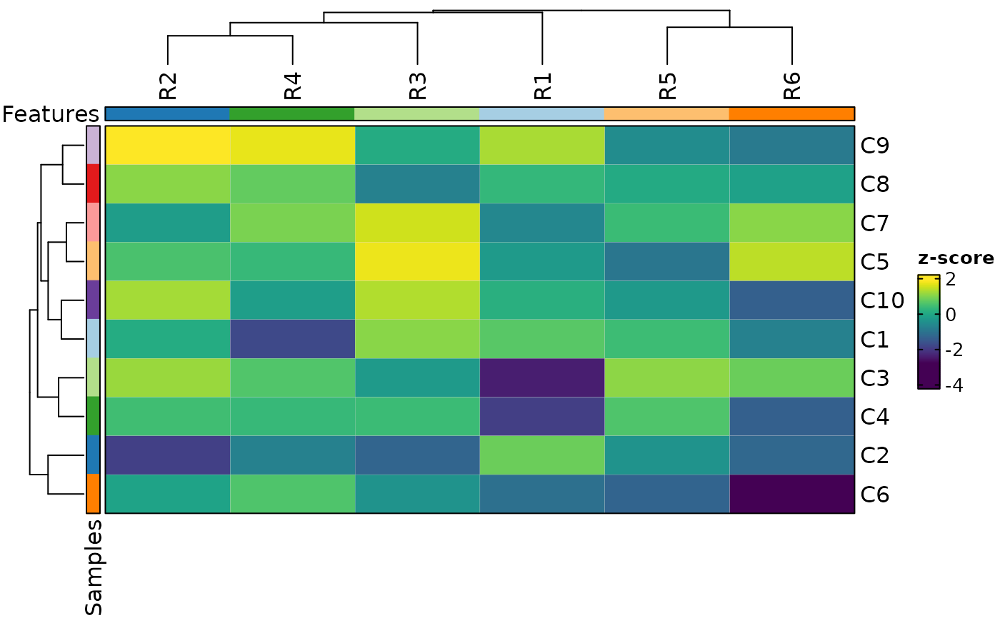
if (requireNamespace("cluster", quietly = TRUE)) {
# add annotations to the heatmap
rows_data <- data.frame(
rows = paste0("R", 1:6),
group = sample(c("X", "Y", "Z"), 6, replace = TRUE)
)
Heatmap(matrix_data, rows_data = rows_data,
row_annotation = list(Group = "group"),
row_annotation_type = list(Group = "simple"),
row_annotation_palette = list(Group = "Spectral")
)
}
#> Warning: [Heatmap] Assuming 'row_annotation_agg["Group"] = dplyr::first' for the simple annotation
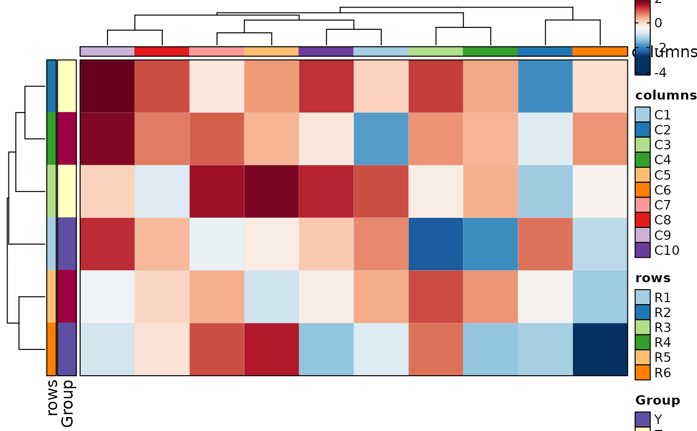
if (requireNamespace("cluster", quietly = TRUE)) {
Heatmap(matrix_data, rows_data = rows_data,
rows_split_by = "group"
)
}
if (requireNamespace("cluster", quietly = TRUE)) {
# add labels to the heatmap
Heatmap(matrix_data, rows_data = rows_data,
rows_split_by = "group", cell_type = "label",
label = function(x) ifelse(
x > 0, scales::number(x, accuracy = 0.01), NA
)
)
}
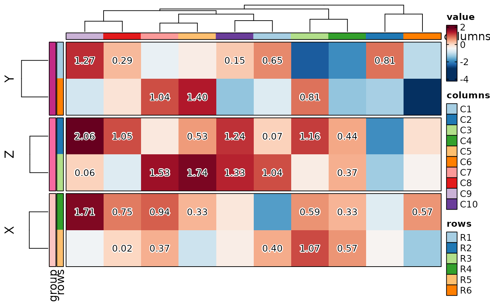
# Use long form data
N <- 500
data <- data.frame(
value = rnorm(N),
c = sample(letters[1:8], N, replace = TRUE),
r = sample(LETTERS[1:5], N, replace = TRUE),
p = sample(c("x", "y"), N, replace = TRUE),
q = sample(c("X", "Y", "Z"), N, replace = TRUE),
a = as.character(sample(1:5, N, replace = TRUE)),
p1 = runif(N),
p2 = runif(N)
)
if (requireNamespace("cluster", quietly = TRUE)) {
Heatmap(data, rows_by = "r", columns_by = "c", values_by = "value",
rows_split_by = "p", columns_split_by = "q", show_column_names = TRUE)
}
if (requireNamespace("cluster", quietly = TRUE)) {
# split into multiple heatmaps
Heatmap(data,
values_by = "value", columns_by = "c", rows_by = "r", split_by = "p",
upper_cutoff = 2, lower_cutoff = -2, legend.position = c("none", "right"),
design = "AAAAAA#BBBBBBB"
)
}
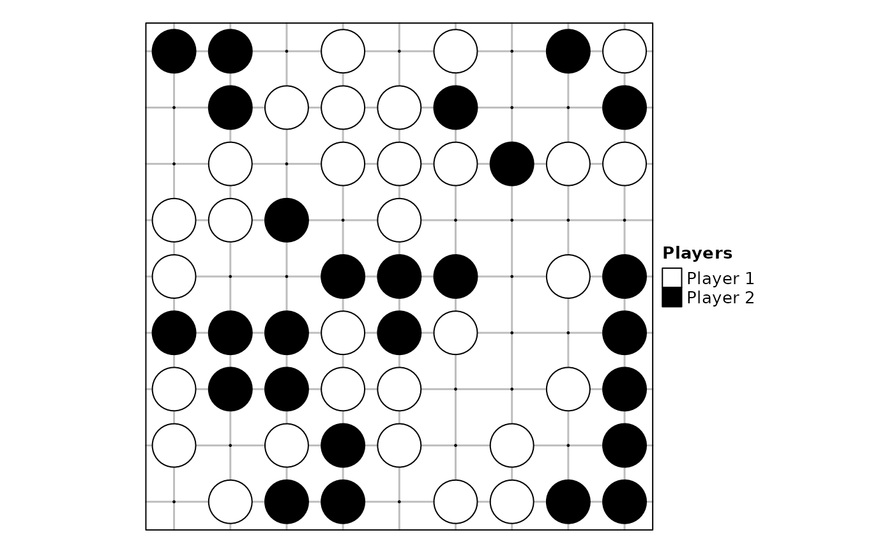
if (requireNamespace("cluster", quietly = TRUE)) {
# cell_type = "bars" (default is "tile")
Heatmap(data, values_by = "value", rows_by = "r", columns_by = "c",
cell_type = "bars")
}
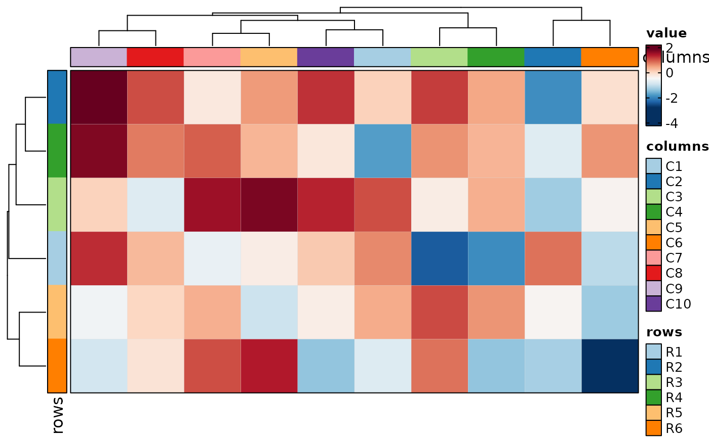
if (requireNamespace("cluster", quietly = TRUE)) {
Heatmap(data, values_by = "value", rows_by = "r", columns_by = "c",
cell_type = "dot", dot_size = length, dot_size_name = "data points",
add_bg = TRUE, add_reticle = TRUE)
}
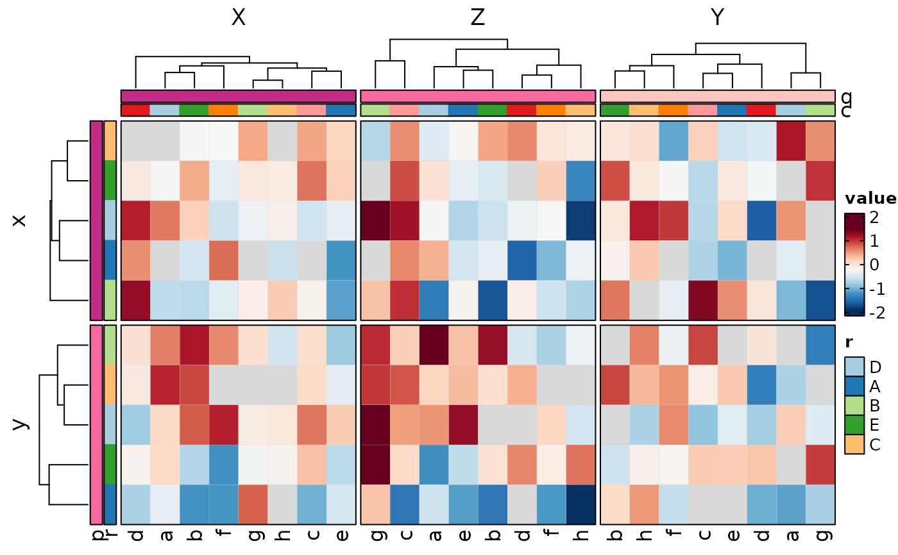
if (requireNamespace("cluster", quietly = TRUE)) {
Heatmap(data, values_by = "value", rows_by = "r", columns_by = "c",
cell_type = "pie", pie_group_by = "q", pie_size = sqrt,
add_bg = TRUE, add_reticle = TRUE)
}
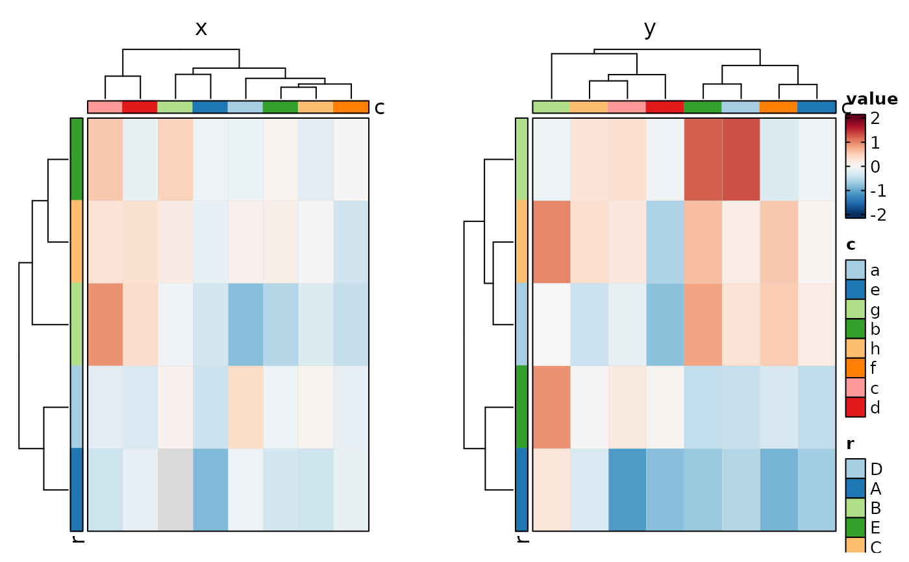
if (requireNamespace("cluster", quietly = TRUE)) {
Heatmap(data, values_by = "value", rows_by = "r", columns_by = "c",
cell_type = "violin", add_bg = TRUE, add_reticle = TRUE)
}
 if (requireNamespace("cluster", quietly = TRUE)) {
Heatmap(data, values_by = "value", rows_by = "r", columns_by = "c",
cell_type = "boxplot", add_bg = TRUE, add_reticle = TRUE)
}
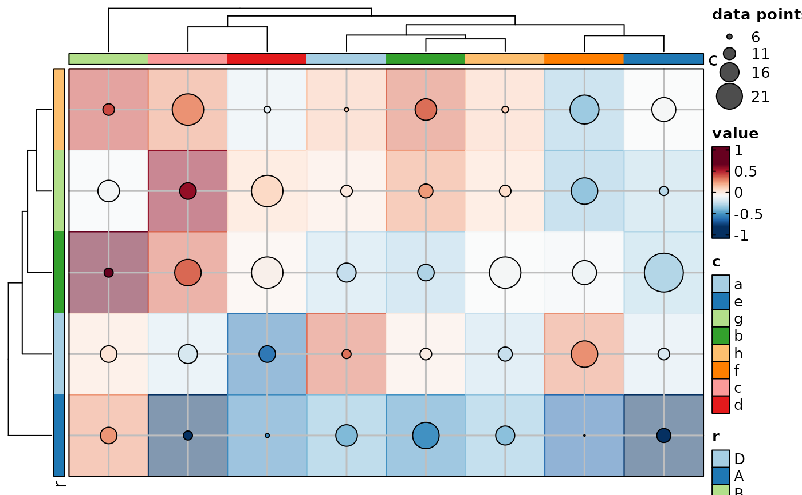
if (requireNamespace("cluster", quietly = TRUE)) {
Heatmap(data,
values_by = "value", rows_by = "r", columns_by = "c",
column_annotation = list(r1 = "p", r2 = "q", r3 = "p1"),
column_annotation_type = list(r1 = "ring", r2 = "bar", r3 = "violin"),
column_annotation_params = list(
r1 = list(height = grid::unit(10, "mm"), show_legend = FALSE),
r3 = list(height = grid::unit(18, "mm"))
),
row_annotation = c("q", "p2", "a"),
row_annotation_side = "right",
row_annotation_type = list(q = "pie", p2 = "density", a = "simple"),
row_annotation_params = list(q = list(width = grid::unit(12, "mm"))),
show_row_names = TRUE, show_column_names = TRUE
)
}
#> Warning: [Heatmap] Assuming 'row_annotation_agg["a"] = dplyr::first' for the simple annotation
if (requireNamespace("cluster", quietly = TRUE)) {
Heatmap(data, values_by = "value", rows_by = "r", columns_by = "c",
cell_type = "boxplot", add_bg = TRUE, add_reticle = TRUE)
}
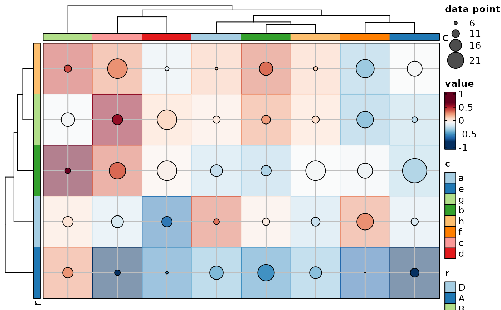
if (requireNamespace("cluster", quietly = TRUE)) {
Heatmap(data,
values_by = "value", rows_by = "r", columns_by = "c",
column_annotation = list(r1 = "p", r2 = "q", r3 = "p1"),
column_annotation_type = list(r1 = "ring", r2 = "bar", r3 = "violin"),
column_annotation_params = list(
r1 = list(height = grid::unit(10, "mm"), show_legend = FALSE),
r3 = list(height = grid::unit(18, "mm"))
),
row_annotation = c("q", "p2", "a"),
row_annotation_side = "right",
row_annotation_type = list(q = "pie", p2 = "density", a = "simple"),
row_annotation_params = list(q = list(width = grid::unit(12, "mm"))),
show_row_names = TRUE, show_column_names = TRUE
)
}
#> Warning: [Heatmap] Assuming 'row_annotation_agg["a"] = dplyr::first' for the simple annotation
 if (requireNamespace("cluster", quietly = TRUE)) {
Heatmap(data,
values_by = "value", rows_by = "r", columns_by = "c",
split_by = "p", palette = list(x = "Reds", y = "Blues")
)
}
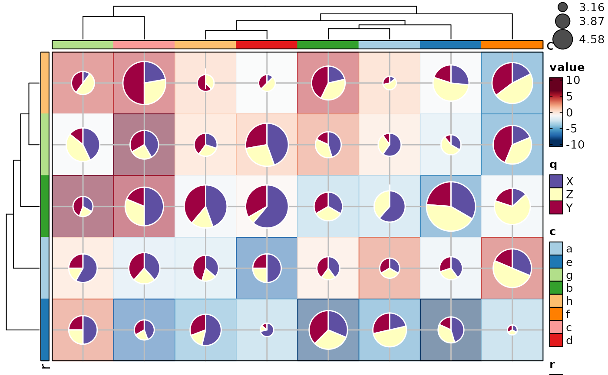
if (requireNamespace("cluster", quietly = TRUE)) {
# implies in_form = "wide-rows"
Heatmap(data, rows_by = c("p1", "p2"), columns_by = "c")
}
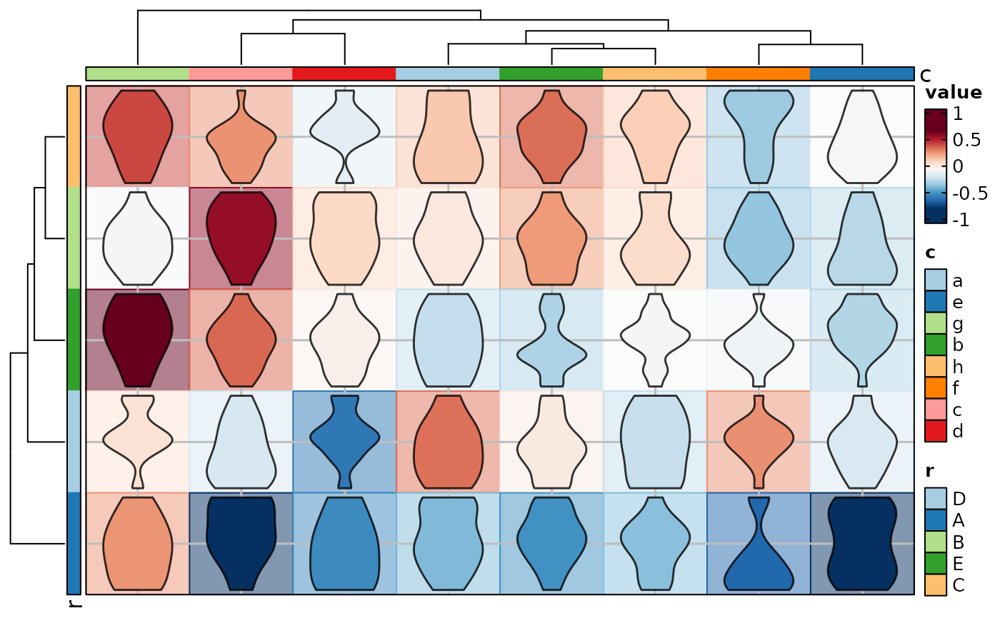
if (requireNamespace("cluster", quietly = TRUE)) {
# implies wide-columns
Heatmap(data, rows_by = "r", columns_by = c("p1", "p2"))
}
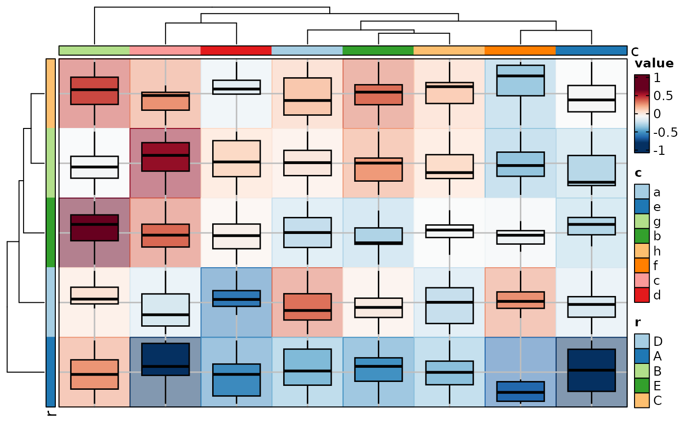
# }
if (requireNamespace("cluster", quietly = TRUE)) {
Heatmap(data,
values_by = "value", rows_by = "r", columns_by = "c",
split_by = "p", palette = list(x = "Reds", y = "Blues")
)
}
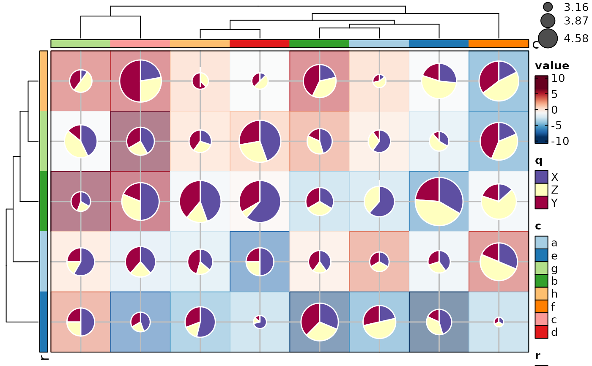
if (requireNamespace("cluster", quietly = TRUE)) {
# implies in_form = "wide-rows"
Heatmap(data, rows_by = c("p1", "p2"), columns_by = "c")
}
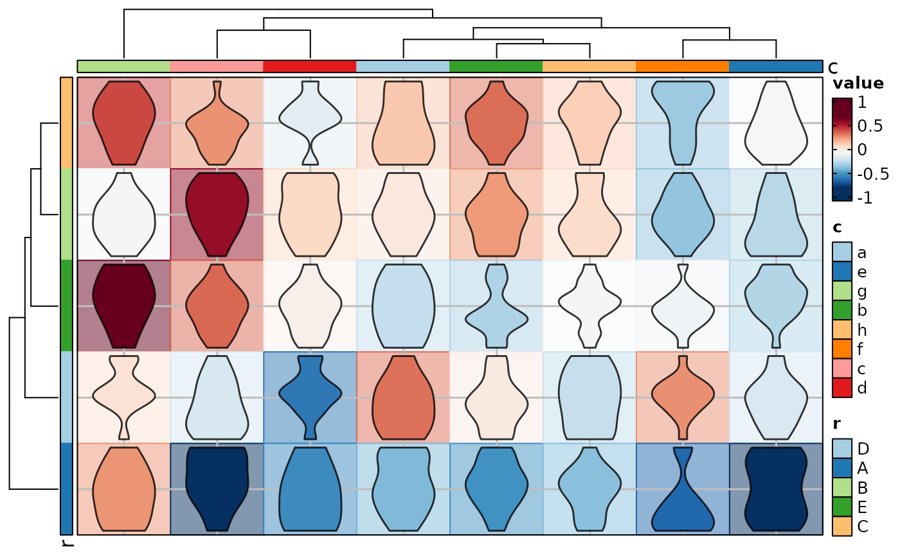
if (requireNamespace("cluster", quietly = TRUE)) {
# implies wide-columns
Heatmap(data, rows_by = "r", columns_by = c("p1", "p2"))
}
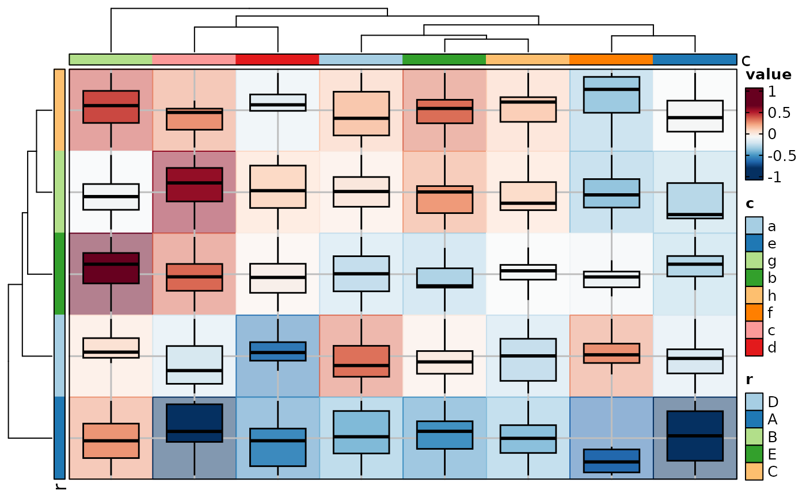
# }